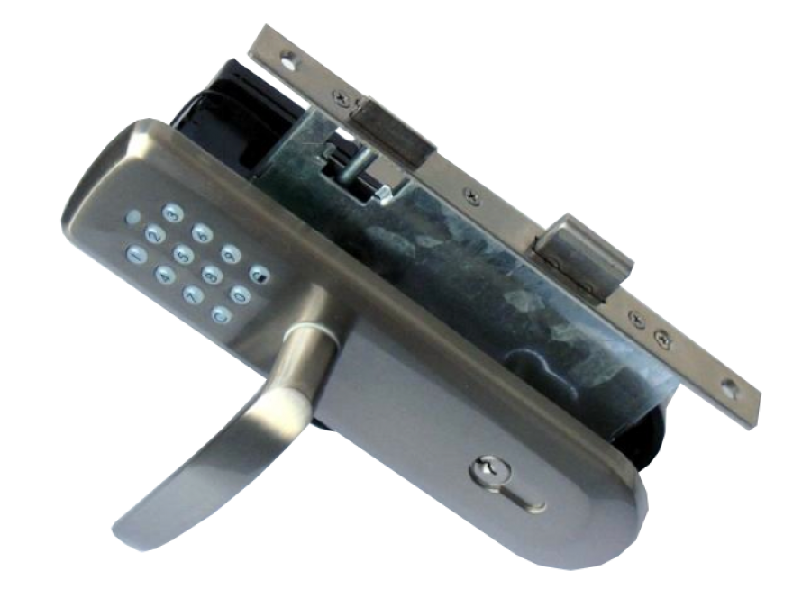
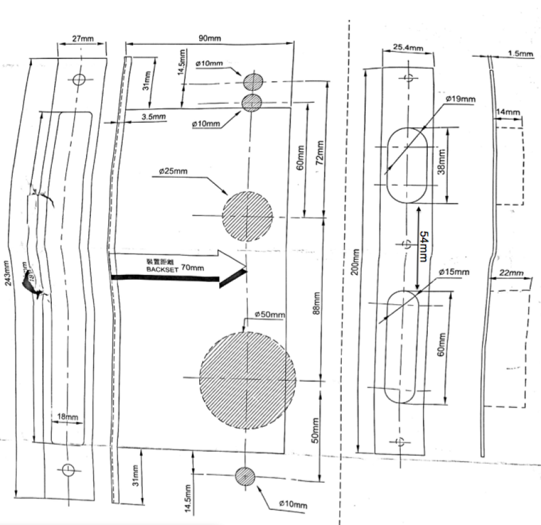

VIS_ZM1702
Firmware Version : 3.15 |
 |
Quick StartA This is a Z-Wave actor. To confirm Inclusion and Exclusion insert the following Key sequence on the key pad: 'C' + '8' + '8' + '8' followed by turning the handle on the inside of the door lock. The operation is confirmed by a long beep. Please refer to the chapters below for detailed information about all aspects of the products usage. |
The ZM1702 is a Z-Wave controllable door lock that fits into standard European doors. The mechanics can be adopted to right or left opening doors. The door lock can be applied for doors from a thickness of 38 mm and up. Since the lock is just a single dead bold lock it will not replace modern three dead bold locking outer doors. The door can be locked and unlocked using the inner side turn piece and/or the key pad. The wireless control allows to lock/unlock the lock, set/unset up to 15 different key codes (4...8 key long) and to limit the validity of certain key code.
Note: The distance between the center of the handle axle and the center of the key insert is 88 mm. If the lock shall be used to retrofit an existing door, the original handle lock distance needs ot be similar.
Scope of Delivery:
Dimensions of the door
Change Orientation of the Handle
I On factory default the device does not belong to any Z-Wave network. The device needs to join an existing wireless network to communicate with the devices of this network. This process is called Inclusion. Devices can also leave a network. This process is called Exclusion. Both processes are initiated by the primary controller of the Z-Wave network. This controller will be turned into exclusion respective inclusion mode. Please refer to your primary controllers manual on how to turn your controller into inclusion or exclusion mode. Only if the primary controller is in inclusion or exclusion mode, this device can join or leave the network. Leaving the network - i.e. being excluded - sets the device back to factory default.
If the device already belongs to a network, follow the exclusion process before including it in your network. Otherwise inclusion of this device will fail. If the controller being included was a primary controller, it has to be reset first.
To confirm Inclusion and Exclusion insert the following Key sequence on the key pad: 'C' + '8' + '8' + '8' followed by turning the handle on the inside of the door lock. The operation is confirmed by a long beep.
| Battery Type | 4 * AA |
| Explorer Frame Support | Yes |
| SDK | 4.51 |
| Device Type | Slave with routing capabilities |
| Generic Device Class | Entry Control |
| Specific Device Class | Secure Keypad Door Lock |
| Routing | No |
| FLiRS | No |
| Firmware Version | 3.15 |